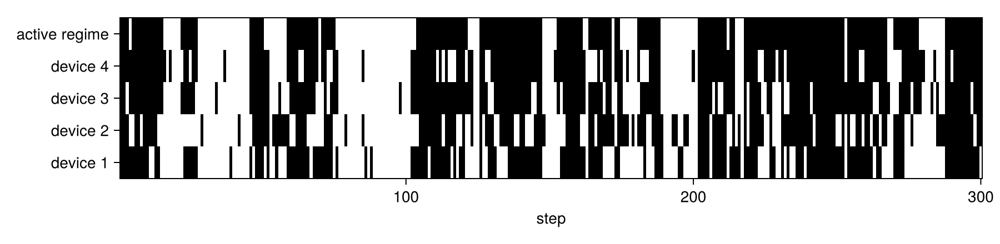
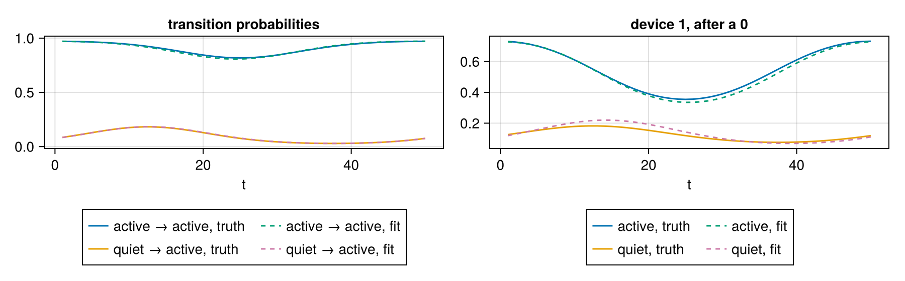
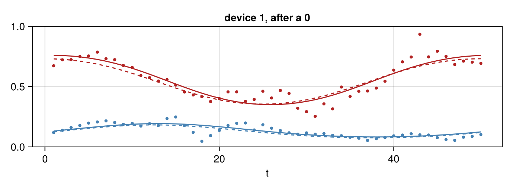
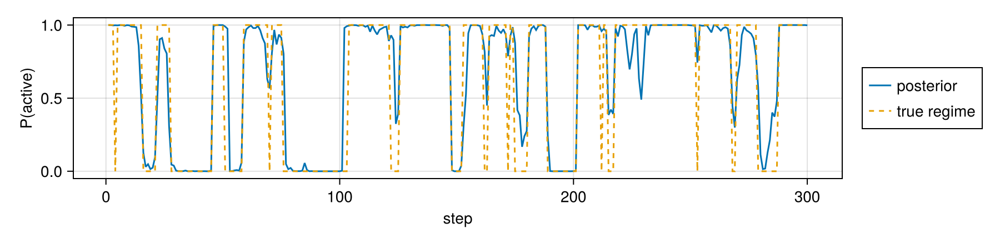
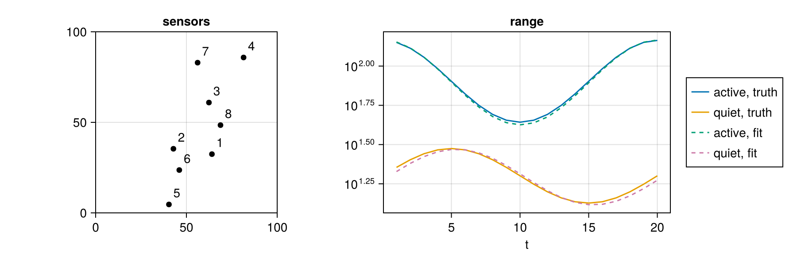

Autoregressive binary periodic hidden Markov model
We observe $D$ binary series: at step $n = 1, \dots, N$, the vector $Y_n = (Y_{1,n}, \dots, Y_{D,n}) \in \{0, 1\}^D$. Step $n$ falls at period index $t_n \in \{1, \dots, T\}$ of a cycle of $T$ steps (n2t[n], see the data layout). Each $Y_{j,n}$ is a Bernoulli variable whose success probability depends on $t_n$, on a hidden state $Z_n \in \{1, \dots, K\}$, and on the previous value $Y_{j,n-1}$ of the same series (a memory of order 1). The hidden states form a Markov chain whose transition probabilities also depend on $t_n$:
\[\begin{aligned} \mathbb{P}(Z_1 = k) &= a_k, \\ \mathbb{P}(Z_{n+1} = l \mid Z_n = k) &= A_{kl}(t_n), \\ \mathbb{P}(Y_{j,n} = 1 \mid Z_n = k,\ Y_{j,n-1}) &= p_{kjh}(t_n), \qquad h = 1 + Y_{j,n-1}. \end{aligned}\]
Given $Z_n$ and $Y_{n-1}$, the $D$ coordinates of $Y_n$ are independent, and independent of the earlier states and observations. Here
- $a = (a_1, \dots, a_K)$ is the initial distribution of the hidden states;
- $A(t)$ is the $K \times K$ transition matrix used when leaving period index $t$, its rows summing to 1;
- $p_{kjh}(t) \in (0, 1)$ is the success probability of series $j$ in state $k$ at period index $t$, in memory category $h$: $h = 1$ after a 0, $h = 2$ after a 1. With a memory of order $m$, $h = 1 + \sum_{i=1}^{m} 2^{m-i}\, Y_{j,n-i} \in \{1, \dots, 2^m\}$ encodes the $m$ previous values; the first steps read them from the initial condition
Y_past.
Each curve is a trigonometric polynomial of degree $d$ (any other basis can replace it),
\[P(t) = c_0 + \sum_{\ell=1}^{d} \left( c_{2\ell-1} \cos\frac{2\pi \ell t}{T} + c_{2\ell} \sin\frac{2\pi \ell t}{T} \right).\]
The transitions go through a softmax, with one polynomial $P^A_{kl}$ for each $k \in \{1, \dots, K\}$ and $1 \le l < K$, state $K$ being the reference, $P^A_{kK} = 0$. The success probabilities go through a logistic, with one polynomial $P^B_{kjh}$ for each state $k$, series $j \in \{1, \dots, D\}$ and memory category $h$:
\[A_{kl}(t) = \frac{e^{P^A_{kl}(t)}}{\sum_{l'=1}^{K} e^{P^A_{kl'}(t)}}, \quad k, l \in \{1, \dots, K\}, \qquad p_{kjh}(t) = \operatorname{logistic}\big(P^B_{kjh}(t)\big),\]
with $\operatorname{logistic}(x) = 1/(1 + e^{-x})$. The initial distribution $a$ does not depend on $t$.
As a toy example, take the on/off status of four devices over a cycle of 50 steps, in two states: an active and a quiet regime. Later sections find a starting point from the data, give each series its own memory, and, last, let the series be correlated in space.
using SmoothPeriodicStatsModelsusing Optimization, SimpleNonlinearSolve # loads the fitting routinesusing OptimizationOptimJL # the optimization algorithm, LBFGSimport HiddenMarkovModels as HMMsusing Distributions, Random, Statisticsusing LinearAlgebra: normusing CairoMakiesolver = LBFGS() # every fit below takes its optimization algorithm explicitlyLBFGS{Nothing, LineSearches.InitialStatic{Float64}, LineSearches.HagerZhang{Float64, Base.RefValue{Bool}}, Returns{Nothing}}(10, LineSearches.InitialStatic{Float64}(1.0, false), LineSearches.HagerZhang{Float64, Base.RefValue{Bool}}(0.1, 0.9, Inf, 5.0, 1.0e-6, 0.6666666666666666, 50, 0.1, 0, Base.RefValue{Bool}(false), nothing, false), nothing, Returns{Nothing}(nothing), Optim.Flat(), true)A model with known coefficients
SmoothARPeriodicHMM(a, θᴬ, θᴮ, T) takes the initial distribution $a$ and the coefficients:
θᴬ[k, l, :],K × (K-1) × (2d+1), the coefficients $(c_0, \dots, c_{2d})$ of $P^A_{kl}$. There is nol = K, the reference; with two states, $A_{k1}(t) = \operatorname{logistic}(P^A_{k1}(t))$.θᴮ[k, j, h, :],K × D × 2^order × (2d+1), the coefficients of $P^B_{kjh}$.
K, D, T, order, d = 2, 4, 50, 1, 1θᴬ = zeros(K, K - 1, 2d + 1)θᴬ[1, 1, :] = [2.5, 1.0, 0.0] # active → active: high probability, highest early in the cycleθᴬ[2, 1, :] = [-2.5, 0.0, 1.0] # quiet → active: low probabilityθᴮ = zeros(K, D, 2^order, 2d + 1)for j in 1:D θᴮ[1, j, 1, :] = [0.2j, 0.8, 0.0] # active, after a 0 θᴮ[1, j, 2, :] = [1.0 + 0.2j, 0.8, 0.0] # active, after a 1 θᴮ[2, j, 1, :] = [-2.0, 0.0, 0.5] # quiet, after a 0 θᴮ[2, j, 2, :] = [-0.5, 0.0, 0.5] # quiet, after a 1endtruth = SmoothARPeriodicHMM([0.5, 0.5], θᴬ, θᴮ, T)SmoothARPeriodicHMM: 2 states, 4 sites, period 50, memory 1
transitions ConstantBasis() + FourierBasis(50, 1), 6 coefficients
emissions ConstantBasis() + FourierBasis(50, 1), 48 coefficientsSimulate
rand(m, n2t; Y_past, z_ini, seq = true) returns the state path z and the D × N observations Y. Y_past is the initial condition, the order observations before Y (zeros by default), and it is also what likelihoods and fits take with Y.
Random.seed!(3)N = 10_000n2t = n_to_t(N, T)Y_past = zeros(Bool, D, order)z, Y = rand(truth, n2t; Y_past, z_ini=1, seq=true)fig = Figure(size=(900, 220))ax = Axis(fig[1, 1], xlabel="step", yticks=(1:D+1, [string.("device ", 1:D); "active regime"]))heatmap!(ax, 1:300, 1:D+1, permutedims([Y[:, 1:300]; permutedims(z[1:300] .== 1)]), colormap=[:white, :black])fig
Fit
fit_mle(m, Y, Y_past; solver, n2t) runs the Baum–Welch algorithm from the coefficients of m. Here the start knows which state is the active one but nothing of the cycle: all harmonics are zero.
θᴬ₀ = zeros(K, K - 1, 2d + 1)θᴬ₀[:, 1, 1] = [1.0, -1.0]θᴮ₀ = zeros(K, D, 2^order, 2d + 1)θᴮ₀[1, :, :, 1] .= 0.5θᴮ₀[2, :, :, 1] .= -1.0m0 = SmoothARPeriodicHMM([0.5, 0.5], θᴬ₀, θᴮ₀, T)m, history = fit_mle(m0, Y, Y_past; solver, n2t, maxiter=200)historyFitHistory: converged in 22 iterations, loglikelihood -19351.9188parameters(m).A and parameters(m).B are the fitted coefficients, in the layout of θᴬ and θᴮ above. The transitions, against the truth:
(fit=round.(parameters(m).A[:, 1, :]; digits=2), truth=θᴬ[:, 1, :])(fit = [2.48 1.04 -0.08; -2.49 -0.02 1.0], truth = [2.5 1.0 0.0; -2.5 0.0 1.0])ARPeriodicHMM(m) evaluates them over the cycle: a is $a$, A[:, :, t] is $A(t)$, and B[k, t, j, h] is the law $\operatorname{Bernoulli}(p_{kjh}(t))$.
function plot_probabilities(models, labels) fig = Figure(size=(900, 280)) ax1 = Axis(fig[1, 1], title="transition probabilities", xlabel="t") ax2 = Axis(fig[1, 2], title="device 1, after a 0", xlabel="t") for (m, label, style) in zip(models, labels, (:solid, :dash)) hmm = ARPeriodicHMM(m) lines!(ax1, 1:T, hmm.A[1, 1, :]; label="active → active, " * label, linestyle=style) lines!(ax1, 1:T, hmm.A[2, 1, :]; label="quiet → active, " * label, linestyle=style) lines!(ax2, 1:T, [succprob(hmm.B[1, t, 1, 1]) for t in 1:T]; label="active, " * label, linestyle=style) lines!(ax2, 1:T, [succprob(hmm.B[2, t, 1, 1]) for t in 1:T]; label="quiet, " * label, linestyle=style) end Legend(fig[2, 1], ax1, orientation=:horizontal, nbanks=2) Legend(fig[2, 2], ax2, orientation=:horizontal, nbanks=2) return figendplot_probabilities([truth, m], ["truth", "fit"])
Decode
viterbi(m, Y, Y_past; n2t) is the most likely state path.
ẑ = viterbi(m, Y, Y_past; n2t)mean(ẑ .== z)0.9368A starting point from the data
The fit above started from a guess that knew which state was the active one. Without such knowledge, the slice method builds a start from the data. At each period index t it fits a mixture of K product-Bernoulli laws to the observations at the period indices t - 2 to t + 2, ignoring the dynamics, and takes the transition probabilities from the most likely state of each observation. The states are sorted at each t, state 1 being the one where device 1 is most often on. fit_θ then fits smooth coefficients to those T estimates.
hmm_slice = fit_mle_all_slices(randARPeriodicHMM(K, T, D, order), Y, Y_past; n2t, Yₜ_extanted=-2:2)θᴬ_slice, θᴮ_slice = fit_θ(hmm_slice, d)m_slice = SmoothARPeriodicHMM(hmm_slice.a, θᴬ_slice, θᴮ_slice, T)SmoothARPeriodicHMM: 2 states, 4 sites, period 50, memory 1
transitions ConstantBasis() + FourierBasis(50, 1), 6 coefficients
emissions ConstantBasis() + FourierBasis(50, 1), 48 coefficientsThe dots are the estimates at each period index, the lines the smooth start, and the dashed lines the truth:
begin fig = Figure(size=(700, 260)) ax = Axis(fig[1, 1], title="device 1, after a 0", xlabel="t", limits=(nothing, (0, 1))) for (k, color) in zip(1:K, (:firebrick, :steelblue)) scatter!(ax, 1:T, succprob.(hmm_slice.B[k, :, 1, 1]); color, markersize=6) lines!(ax, 1:T, succprob.(ARPeriodicHMM(m_slice).B[k, :, 1, 1]); color) lines!(ax, 1:T, succprob.(ARPeriodicHMM(truth).B[k, :, 1, 1]); color, linestyle=:dash) end figend
Baum–Welch from that start:
m2, history2 = fit_mle(m_slice, Y, Y_past; solver, n2t, maxiter=200)(from_guess=loglikelihood(history), from_slices=loglikelihood(history2))(from_guess = -19351.918782913923, from_slices = -19351.918469192748)The two starts reach the same maximum.
Each series its own memory
In SmoothsARPeriodicHMM each series $j$ has its own memory order $m_j$, so its memory category runs over $h \in \{1, \dots, 2^{m_j}\}$. The emission coefficients θᴮ[k, j] are a vector of $2^{m_j}$ coefficient vectors, θᴮ[k, j][h] being those of $P^B_{kjh}$, and the initial condition Y_past[j] holds the $m_j$ previous values of series $j$. Here device 1 has no memory, devices 2 and 3 remember one step, and device 4 two:
orders = [0, 1, 1, 2]θᴮs = [[θᴮ[k, j, 1, :] .+ (h - 1) / 2 for h in 1:2^orders[j]] for k in 1:K, j in 1:D]ms = SmoothsARPeriodicHMM([0.5, 0.5], θᴬ, θᴮs, T)Y_past_s = [zeros(Bool, o) for o in orders]Ys = rand(ms, n2t; Y_past=Y_past_s, z_ini=1)loglikelihood(ms, Ys, Y_past_s; n2t)-18835.771156873343fit_mle, viterbi and fit(SeasonalFit, …) take the same arguments, so the BIC can compare memory orders.
With HiddenMarkovModels.jl
The smooth HMMs are HiddenMarkovModels.AbstractHMMs whose control at step n holds the period index and the memory categories. SeasonalControls(Y, Y_past; n2t) builds that control sequence, and the functions of HiddenMarkovModels then apply, for example the posterior probabilities of the states. The guide explains the control and which functions apply.
obs = [Y[:, n] for n in 1:N]controls = SeasonalControls(Y, Y_past; n2t)γ, logL = HMMs.forward_backward(m, obs, controls)([0.9999999999999755 0.9997886410450588 … 0.9968000849955353 0.9925276000312583; 2.8022677275274337e-98 0.0002113589549166307 … 0.0031999150044643913 0.007472399968741438], [-19351.918782913923])begin fig = Figure(size=(900, 220)) ax = Axis(fig[1, 1], xlabel="step", ylabel="P(active)") lines!(ax, 1:300, γ[1, 1:300], label="posterior") lines!(ax, 1:300, z[1:300] .== 1, label="true regime", linestyle=:dash) Legend(fig[1, 2], ax) figend
logL is the loglikelihood, the same as loglikelihood(m, Y, Y_past; n2t).
only(logL), loglikelihood(m, Y, Y_past; n2t)(-19351.918782913923, -19351.918782913923)Spatially correlated series
In SmoothARPeriodicHMM the series are independent given the hidden state. SmoothARPeriodicHMMSpatial correlates them through a latent Gaussian vector. Here without memory, given $Z_n = k$,
\[Y_{j,n} = \mathbf{1}\big\{U_{j,n} < \Phi^{-1}\big(p_{kj}(t_n)\big)\big\}, \qquad \operatorname{Corr}(U_{i,n}, U_{j,n}) = \exp\big(-\Delta_{ij}/R_k(t_n)\big),\]
where
- $U_n = (U_{1,n}, \dots, U_{D,n})$ is a centred Gaussian vector with unit variances, drawn independently at each step, and $\Phi$ the standard normal cdf, so that $\mathbb{P}(Y_{j,n} = 1 \mid Z_n = k) = p_{kj}(t_n)$ as before;
- $\Delta_{ij}$ is the distance between series $i$ and $j$;
- $R_k(t) = \exp\big(P^R_k(t)\big) > 0$ is the range of state $k$ at period index $t$, a third trigonometric polynomial through an exponential.
The law of $Y_n$ given $Z_n = k$ is a SpatialBernoulli.
Take eight sensors scattered on a 100 × 100 field, observed over a cycle of 20 steps. In the active regime the range is long, so sensors switch on together over large areas; in the quiet regime it is short.
Random.seed!(4)Dₛ, Tₛ = 8, 20positions = 100 .* rand(2, Dₛ)distance = [norm(positions[:, i] - positions[:, j]) for i in 1:Dₛ, j in 1:Dₛ]θᴬₛ = zeros(K, K - 1, 2d + 1)θᴬₛ[1, 1, :] = [2.0, 0.5, 0.0]θᴬₛ[2, 1, :] = [-2.0, 0.0, 0.5]θᴮₛ = zeros(K, Dₛ, 1, 2d + 1) # no memory: one categoryθᴮₛ[1, :, 1, :] .= [1.0 0.5 0.0]θᴮₛ[2, :, 1, :] .= [-1.5 0.0 0.3]θᴿ = zeros(K, 2d + 1) # θᴿ[k, :]: the coefficients of P^R_k, the log of the rangeθᴿ[1, :] = [log(80.0), 0.6, 0.0]θᴿ[2, :] = [log(20.0), 0.0, 0.4]truth_s = SmoothARPeriodicHMMSpatial([0.5, 0.5], θᴬₛ, θᴮₛ, θᴿ, Tₛ, distance; QMC_m=30)SmoothARPeriodicHMMSpatial: 2 states, 8 sites, period 20, memory 0
transitions ConstantBasis() + FourierBasis(20, 1), 6 coefficients
emissions ConstantBasis() + FourierBasis(20, 1), 48 coefficients
range ConstantBasis() + FourierBasis(20, 1), 6 coefficients, QMC budget 30The likelihood of one observation is a D-dimensional Gaussian orthant probability, estimated by quasi-Monte Carlo with D * QMC_m points: raising QMC_m makes it more accurate and slower. Simulation works as before.
Nₛ = 6_000n2tₛ = n_to_t(Nₛ, Tₛ)Yₛ_past = zeros(Bool, Dₛ, 0)zₛ, Yₛ = rand(truth_s, n2tₛ; Y_past=Yₛ_past, z_ini=1, seq=true)([1, 1, 1, 1, 1, 1, 1, 1, 1, 1 … 1, 1, 1, 1, 1, 1, 1, 1, 1, 1], Bool[1 1 … 1 1; 1 1 … 1 1; … ; 1 1 … 1 1; 1 1 … 1 1])The model without space gives a start drawn from the data. Its fit is fast, and its transitions and success probabilities mean the same as in the spatial model, $p_{kj}(t)$ being the probability of a 1 in both. It starts here from a guess that knows which state is the active one:
θᴬ₀ₛ = zeros(K, K - 1, 2d + 1)θᴬ₀ₛ[:, 1, 1] = [1.0, -1.0]θᴮ₀ₛ = zeros(K, Dₛ, 1, 2d + 1)θᴮ₀ₛ[1, :, 1, 1] .= 0.5θᴮ₀ₛ[2, :, 1, 1] .= -1.0m_ind, _ = fit_mle(SmoothARPeriodicHMM([0.5, 0.5], θᴬ₀ₛ, θᴮ₀ₛ, Tₛ), Yₛ, Yₛ_past; solver, n2t=n2tₛ)(SmoothARPeriodicHMM{ComponentArrays.ComponentVector{Float64, Vector{Float64}, Tuple{ComponentArrays.Axis{(A = ViewAxis(1:6, ShapedAxis((2, 1, 3))), B = ViewAxis(7:54, ShapedAxis((2, 8, 1, 3))))}}}, ARPeriodicHMM{Distributions.Univariate, Float64, Array{Distributions.Bernoulli{Float64}, 4}}, SmoothPeriodicStatsModels.TimeVaryingParameters.CombinedBasis{Tuple{ConstantBasis, FourierBasis{Int64}}}, SmoothPeriodicStatsModels.TimeVaryingParameters.CombinedBasis{Tuple{ConstantBasis, FourierBasis{Int64}}}, Nothing}((A = [0.6073420371338853; -1.3474183585051647;;; 0.36768728639644993; 0.04120156727567132;;; -0.24165736359764253; 0.6616324355349156], B = [2.115712355391149 2.204353951055946 … 1.7151875632959188 2.2506356425506624; -1.6132746483089038 -1.5938951280206697 … -1.3329454053070322 -1.587541874027772;;;; 0.7256318006464789 0.7020826062688127 … 0.8088224135637943 0.7977793601143675; 0.0853570388415256 0.012437783651792378 … -0.04063501838699218 -0.0750059028264407;;;; -0.008606564441961761 -0.1073094997470786 … 0.06667727463498355 0.05903514367682817; 0.08321394512541826 0.1275328828144395 … 0.202299112260516 0.22580626061990677]), ARPeriodicHMM{Distributions.Univariate, Float64, Array{Distributions.Bernoulli{Float64}, 4}}([1.0, 4.857556905101353e-40], [0.7073104514909121 0.29268954850908796; 0.24903274168059408 0.7509672583194059;;; 0.6819536715228218 0.3180463284771782; 0.2839020241067611 0.716097975893239;;; 0.6520263660780207 0.3479736339219794; 0.31261356903342563 0.6873864309665744;;; … ;;; 0.7401695415784653 0.2598304584215348; 0.1540760202611625 0.8459239797388375;;; 0.7372472146089099 0.26275278539109015; 0.18054062444787058 0.8194593755521294;;; 0.7261208128516845 0.27387918714831555; 0.2131206004409817 0.7868793995590183], Distributions.Bernoulli{Float64}[Bernoulli(0.9428468649670404) Bernoulli(0.936890908086952) … Bernoulli(0.9431328218634104) Bernoulli(0.9448695226779008); Bernoulli(0.18147578426605915) Bernoulli(0.18312644819353957) … Bernoulli(0.17396115062807518) Bernoulli(0.17829856869849714);;; Bernoulli(0.9447427821023451) Bernoulli(0.9375717721619545) … Bernoulli(0.9481045984424182) Bernoulli(0.9481637032778759); Bernoulli(0.1761494637803754) Bernoulli(0.18110620053533177) … Bernoulli(0.16500142321910738) Bernoulli(0.17058918553211258);;; Bernoulli(0.9557448978776428) Bernoulli(0.9514667440191892) … Bernoulli(0.9517303659315351) Bernoulli(0.9558282412588885); Bernoulli(0.16471185964570334) Bernoulli(0.17378353513050843) … Bernoulli(0.14924148305531817) Bernoulli(0.15628607298410996);;; Bernoulli(0.9121014741913926) Bernoulli(0.9010650060122483) … Bernoulli(0.9144845209172991) Bernoulli(0.9164367745816184); Bernoulli(0.19243918111896563) Bernoulli(0.20465449650320255) … Bernoulli(0.173847414673722) Bernoulli(0.18189678395278377);;; Bernoulli(0.9197956314301831) Bernoulli(0.9092437337551732) … Bernoulli(0.9238039639303794) Bernoulli(0.9245127544184915); Bernoulli(0.22239172162675697) Bernoulli(0.23772373597990026) … Bernoulli(0.188174003789514) Bernoulli(0.2052131120804019);;; Bernoulli(0.946323209563537) Bernoulli(0.9400370924345812) … Bernoulli(0.9474720827054536) Bernoulli(0.9487258722607484); Bernoulli(0.192765127981309) Bernoulli(0.20292572488876914) … Bernoulli(0.16985167148751829) Bernoulli(0.18131602872580888);;; Bernoulli(0.9244935367546723) Bernoulli(0.917490634186323) … Bernoulli(0.9215661510085481) Bernoulli(0.9258079611759882); Bernoulli(0.21264121239745998) Bernoulli(0.22323524970805986) … Bernoulli(0.19245981063368237) Bernoulli(0.20204199100563933);;; Bernoulli(0.9538060611231209) Bernoulli(0.949345882853071) … Bernoulli(0.9521716170125604) Bernoulli(0.9547140483121069); Bernoulli(0.1695107336161027) Bernoulli(0.18012551703841004) … Bernoulli(0.1507597394354342) Bernoulli(0.159420284614633);;;;]), 20, ConstantBasis() + FourierBasis(20, 1), ConstantBasis() + FourierBasis(20, 1), nothing, Base.RefValue{ComponentArrays.ComponentVector{Float64, Vector{Float64}, Tuple{ComponentArrays.Axis{(A = ViewAxis(1:6, ShapedAxis((2, 1, 3))), B = ViewAxis(7:54, ShapedAxis((2, 8, 1, 3))))}}}}((A = [0.6073420371338853; -1.3474183585051647;;; 0.36768728639644993; 0.04120156727567132;;; -0.24165736359764253; 0.6616324355349156], B = [2.115712355391149 2.204353951055946 … 1.7151875632959188 2.2506356425506624; -1.6132746483089038 -1.5938951280206697 … -1.3329454053070322 -1.587541874027772;;;; 0.7256318006464789 0.7020826062688127 … 0.8088224135637943 0.7977793601143675; 0.0853570388415256 0.012437783651792378 … -0.04063501838699218 -0.0750059028264407;;;; -0.008606564441961761 -0.1073094997470786 … 0.06667727463498355 0.05903514367682817; 0.08321394512541826 0.1275328828144395 … 0.202299112260516 0.22580626061990677]))), FitHistory{Nothing, Nothing}(true, 16, [-24120.93728817138, -23923.480880912066, -23886.621946719675, -23877.225861192914, -23874.32291529581, -23873.265044878834, -23872.830572397797, -23872.638755743723, -23872.550639693254, -23872.509289570717, -23872.489657292288, -23872.48027376446, -23872.47577076487, -23872.47360442531, -23872.472560534396, -23872.472056975803], nothing, nothing, 16, -23872.472056975803))Only the ranges need a guess: the median distance between two sensors, constant over the cycle.
θᴿ₀ = zeros(K, 2d + 1) # θᴿ₀[k, 1] = log R_k, the harmonics zeroθᴿ₀[:, 1] .= log(median(distance[distance.>0]))m0_s = SmoothARPeriodicHMMSpatial(ARPeriodicHMM(m_ind).a, parameters(m_ind).A, parameters(m_ind).B, θᴿ₀, Tₛ, distance; QMC_m=30)SmoothARPeriodicHMMSpatial: 2 states, 8 sites, period 20, memory 0
transitions ConstantBasis() + FourierBasis(20, 1), 6 coefficients
emissions ConstantBasis() + FourierBasis(20, 1), 48 coefficients
range ConstantBasis() + FourierBasis(20, 1), 6 coefficients, QMC budget 30The fit is the same call. Because the likelihood is a random estimate, the loglikelihood path is noisy: fit_mle returns the iterate with the highest loglikelihood, history.best_iteration, rather than the last, and usually runs to maxiter. The range is updated by maximizing a pairwise likelihood, whose solver iterations maxiters_R caps.
m_s, history_s = fit_mle(m0_s, Yₛ, Yₛ_past; solver, n2t=n2tₛ, maxiter=15, maxiters_R=50)history_s.best_iteration15parameters(m_s).R holds the coefficients of the ranges, and curve(m, :R) is the K × T matrix of ranges.
begin fig = Figure(size=(900, 300)) ax1 = Axis(fig[1, 1], title="sensors", aspect=DataAspect(), limits=(0, 100, 0, 100)) scatter!(ax1, positions[1, :], positions[2, :], color=:black) text!(ax1, positions[1, :], positions[2, :], text=string.(1:Dₛ), offset=(5, 5)) ax2 = Axis(fig[1, 2], title="range", xlabel="t", yscale=log10) for (m, label, style) in zip((truth_s, m_s), ("truth", "fit"), (:solid, :dash)) R = curve(m, :R) lines!(ax2, 1:Tₛ, R[1, :]; label="active, " * label, linestyle=style) lines!(ax2, 1:Tₛ, R[2, :]; label="quiet, " * label, linestyle=style) end Legend(fig[1, 3], ax2) figend
Both ranges are recovered. A range much longer than the distances between the sensors makes them all strongly correlated, and the data then say less about its exact value: with 2,000 steps instead of 6,000, the range of the active state at the start of the cycle comes out near 200 instead of the true 142, whether the fit starts from the model without space, from a guess or from the truth.
viterbi and ARPeriodicHMMSpatial(m) work as for the model without space:
ẑₛ = viterbi(m_s, Yₛ, Yₛ_past; n2t=n2tₛ)mean(ẑₛ .== zₛ)0.9265This page was generated using Literate.jl.